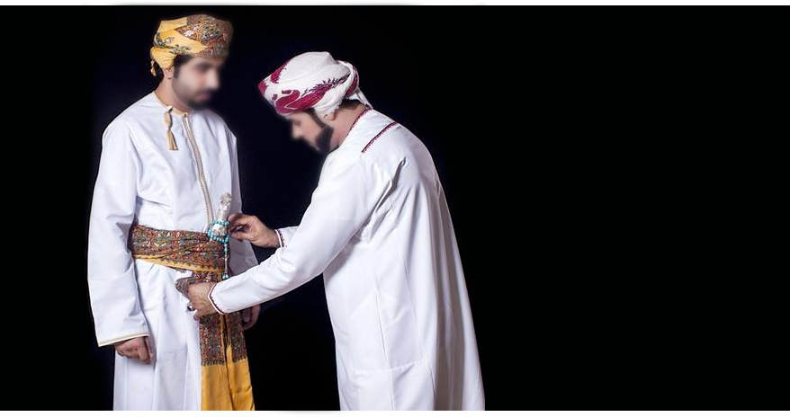

لكل منطقة جغرافية ما يميزها من رموز تدل على هويتها الحضارية والثقافية، وتختلف تلك الرموز حسب البيئة التي نشأت فيها وظروفها الطبيعية، ومن تلك الرموز غطاء الرأس الذي يميز البشر حسب الحضارة التي ينتسبون إليها، فالطربوش مثلاً كان غطاء الرأس عند الأتراك، والكوبولا كان يرتديها النبلاء الإنجليز في القرن الثامن عشر، وقبعة الأوشانكاي المصنوعة من الفرو يرتديها الروس وشعوب شرق أوروبا. أما العرب فلهم طابعهم التقليدي الخاص، الذي لا يزالون يفخرون به ويتمسكون به، فأغلب شعوب العالم تميز العربي عن غيره بغطاء الرأس الخاص المعروف باسم (الشماغ أو الكوفية أو الغترة) الذي عُرف لأول مرة من أيام الدولة السومرية (أول حضارة عرفتها البشرية)، وبحسب ما ورد في النقوش المحفورة في بلاد الرافدين، فقد كان الشماغ هو غطاء الرأس الذي يرتديه الكهنة السومريين منذ العام 3100 ق.م.
التاريخ
وفقاً للنقوش المكتشفة في العراق، فقد شاع استخدام الشماغ منذ الألف الثالث قبل الميلاد بوصفه وتمييزه بعلامات صورية سومرية من نهاية الألف الرابع قبل الميلاد، ومسميات جزرية أصيلة من منتصف الألف الثالث قبل الميلاد، لتدل على لباس يشير إلى العظمة والرّفعة والسمو والشموخ، ثم مروراً بعصر كوديا حاكم سلالة لكش نهاية الألف الثالث قبل الميلاد، والذي من المرجح أنه تبادل هذا الزي الرسمي الدال على السمو والشموخ والمكانة الرفيعة التي يتحلى بها حكّام وأمراء ممالك الخليج العربي والجزيرة منذ أمد بعيد، مما يشير إلى عنصر حضاري وثقافي وترابط تاريخي بين سكان بلاد الرافدين وسكان الخليج والجزيرة العربية.


أصل التسمية
ويقال حسب بعض المؤرخين أن شماغ هي كلمة سومرية ذات مقطعين ( اش ماخ ) بمعنى غطاء الرأس وهذا الاعتقاد مشكوك بأمره والصحيح أن المقطع ASH في اللغة السومرية يعني خيوط العنكبوت أو التشابك العنكبوتي أما المقطع MAKH فيعني عال أو سام ( ذو مقام رفيع ) ولفظ اسم الشماغ وجدنا أنه إذا ما سُبقت العلامة ماخ بالسابقة tug والتي تعني قماش بشكل عام، وتُقرأ Tug-Makh فإن المعنى سيكون (ملاءة) في اللغة العربية وهي ثوب من القماش عبارة عن قطعة واحدة ذو شقين متطابقين، وأيضاً عُرف الشماغ باللغة الأكادية باسم ( شاموخو) وهي مفردة من اللغات الجزرية ( والتي تُعتبر اللغة العربية من ضمنها) وتعني الشموخ والسمو، كما نشاهد في بعض المنحوتات والتماثيل أن واحد من أهم حكام بلاد الرافدين الذين لبسوا الشماغ هو أمير سومري السُلالة لمدينة مهمة هي مدينة لكش واسمه كوديا 2144-2124 ق.م ومعنى اسمه الموحى إليه أو المتنبئ وتماثيله المحفوظة في متاحف العالم ومنها متحف اللوفر توضح أنه أول من لبس الشماغ على رأسه كعصابة وليس شماغاً مسترسلاً متدلياً، ووصف في ملبسه هذا كونه أميراً وكاهناً أعظم، ربطته مع ممالك الخليج العربي وشرق
الجزيرة العربية علاقات صداقة وتجارة قوية، وجلب من ممالك الخليج العربي نهاية الألف الثالث قبل الميلاد أحجار الديورايت الأسود والتي صَنع منها تماثيله، وأيضاً يُقال حسب بعض المصادر أن الشماغ كلمة تركية الأصل وتُلفظ ( يشماغ ) بمعنى الملابس الفضفاضة، وكانت أنماط توزيع الألوان على الشماغ تُحاكي شباك الصيد أو سنابل القمح كما يعتقد الباحثون في الملابس التقليدية، وهناك من يقول أن أصل الشماغ جاء من البريطانيين بعد أن قدموه للعرب حينما أتوا للجزيرة العربية إلا أن ذلك غير صحيح حيث أن الشماغ يعود لآلاف السنين وهو مرتبط بطبيعة حياة أجدادنا الصحراوية منذ القِدم وذلك قبل قدوم البريطانيين بآلاف السنين كما كان يستخدمه الطوارق الذين يعيشون في المغرب العربي لحمايتهم من الرياح الرملية وأشعة الشمس.
وتختلف تسمية الشماغ حسب اللهجات الإقليمية عبر أنحاء الشرق الأوسط وشمال إفريقيا وحسب اختلاف المسميات التي استخدمها الناس بمرور الزمن لغطاء الرأس التقليدي، وتعود شعبية الشماغ التي استمرت لفترة طويلة إلى مدى فائدته وتنوعه كلِباس في النهار، يمنع حروق الشمس، وخلال الليل يحافظ على دفء الرأس عند انخفاض درجات الحرارة، كما أنه مفيد خاصةً في المناطق الجافة والصحراوية حيث يمكنه حماية البشرة من الغبار والرمال إضافة إلى حماية العنق، مما يجعله أفضل من القبعة العادية.
أشهر أنواع أغطية الرأس في العالم العربي والشرق الأوسط :
الغترة
يتميز الرجال في دولة الإمارات وقطر وبعض المناطق المختلفة في دول الخليج بارتداء "الغترة"، وهي أخف وزناً من الشماغ نظراً لاستخدام مادة "البوليستر" غالباً في تصنيعها، كما تأتي بأشكال ونقوش مختلفة تتضمن أحياناً رموزاً لتلك الدول مثل الصقر والقارب والسيف والنخلة وغيرها. يتم استخدام اللون الأبيض عادة في حياكة الغترة بدرجاتٍ مختلفة، حيث يساعد اللون الأبيض في تخفيف الحرارة خصوصاً في فصل الصيف. أما طريقة ارتداءها فتكون بوضعها منفردة مُلتفةً فوق الرأس، وتسمى بهذا الشكل "عصامة" أو "حمدانية"، أو بوضع العِقال فوقها لتثبيتها، وهناك الغترة البيضاء المُجَوتَة نسبة إلى مادة (الجِويت)، أو كما تعرف محلياً بالجِويتي، وهي الصبغة التي يميل لونها الأبيض إلى الأزرق الفاتح، وهناك الغترة المخورّة أحد أنواع الغُتر المعروفة في الإمارات المزخرفة أو المطرزة. والغترة، يعود أصلها إلى الغتراء، ويعني ما كثر من الأكسية، جمع كِساء، وهي أحد ألبسة الرأس، وعرفت عند أهل الإمارات قديماً باسم (سُفرة).

الشماغ
يشتهر الشماغ عند شعوب المنطقة عموماً، خاصة دول الخليج كالسعودية والامارات والكويت والبحرين، ويدرج في استخدامه اللونين الأحمر والأبيض، إلا أنه قد يتضمن ألوان أخرى كالأصفر والبني والأسود وغيرهم، والذين غالباً ما يُعرفون عند أهل العراق والشام. يُصنع الشماغ عادة من القطن، والذي تختلف أنواعه باختلاف المناطق المستهدفة لارتداءه فيها، حيث يفضل أهل العراق والشام القطن الأثقل وزناً المتذيل بكراكيش مختلفة، وذلك نظراً لاقتصار ارتداءه في المناسبات غالباً، بينما يميل أهل الخليج للأقطان الأخف وزناً المخيوطة بالكامل من أطرافها لتتناسب مع استخدامهم اليومي له، وطبيعة حرارة المنطقة، وليتناسب الشماغ مع الكندورة أو "الثوب" الخليجي المعروف ببياضه غالباً.
أما طرق ارتداء الشماغ فيكون عبر فرده على الرأس وتثبيته بالعقال الأسود من أعلاه، ليشكل بهذا المظهر الزي الرسمي لأغلب دول الخليج، أو وضعه منفرداً على الرأس دون العقال وهو ما تتميز به بعض المناطقة في المملكة العربية السعودية، أو عبر لفه على الرأس كما هو معروف في دولة الامارات وسلطنة عمان وبعض المناطق في اليمن، وتسمى هذه اللفة "عصامة" أو "حمدانية" عند شعب الامارات، ومن المعتاد أيضاً ارتداء قبعة أو طاقية تحت الشماغ أو الغترة لتثبيتها على الرأس.
الشماغ الأحمر
يُعد الشماغ الأحمر من الأكثر شيوعاً في منطقة الخليج باعتباره اللون الأكثر استخداماً في المملكة العربية السعودية ذات الأغلبية السكانية في المنطقة، ومن الجدير بالإشارة إلى أصل هذا اللون في الشماغ، حيث يظن البعض أن الشماغ بلونه الاحمر ظهر لأول مرة عند الانجليز القادمين للمنطقة في منتصف القرن الماضي، بينما وفي الأصل فقد كان العرب يرتدونه منذ مدة أبعد بدليل عديد المشاهد والصور لتلك الحقبة. الشماغ الأحمرعموماً هو عبارة عن قطعة قماش مربعة ذات لونين أحمر وأبيض، تطوى عادة على شكل مثلث، وتُلبس عن طريق وضعها على الرأس أو على الكتف.


الشال
وقد عرف بهذا الاسم تحديداً في العقود الأخيرة، وهي قطعة قماش الرأس المصنوعة من الصوف الدافئ المستخلص من جلود الحيوانات، وغالباً ما يتم جلبها من مناطق مثل الهند وكشمير وباكستان. والشال عبارة عن قطعة صوف تختلف درجات ثقلها باختلاف أنواعها، ذات زخارف مشغولة بالإبرة من الصوف أيضاً، يأتي بألوان داكنة وتصاميم مختلفة، تتقاطع مع الشماغ والغتر بالأحجام وطرق الارتداء، حيث يكثر ارتداءها منفردة كـ "عصامة" أو أحياناً مع العقال في اغلب دول الخليج، ويكون وقت ارتداء الشال هو فصل الشتاء من كل عام.
ومن أنواعه شال ترمه، والترمه الشعر المأخوذ من الماعز، ويحاك يدوياً في مناطق كشمير والهند وباكستان، أو عبر مكائن الخياطة الحديثة. ويعتبر الشال من أغلى أنواع أغطية الرأس عند الرجل الخليجي، حيث تبدأ أسعاره من ال150 درهم إلى حوالي 100 ألف درهم إماراتي.
العمامة العُمانية (المِصّر والكمة)

هي غطاء رأس رجالي تقليدي ورسمي، بحسب ما جاء في الموسوعة العمانية، وتُعرف في عُمان أنواع عدة من العمائم، منها: العمامة السعيدية: المقلمة بالألوان الأصفر والأزرق والنيلي والبنفسجي والأحمر، يلبسها أفراد أسرة آل سعيد الحاكمة. العمامة البيضاء: تُصنع من القطن، وهي خالية من أي تطريز، وبأطرافها أهداب، تلف حول الرأس بعد لبس الكمة، ويتلحى بأحد أطرافها حول الرقبة، ويلبسها عادة بعض علماء الدين والقضاة ومن تَأثر بهم.
المِصَر: نوع من العمائم، وهو أكثر شيوعا عند العمانيين، إذ لا ينحصر لبسه على فئة دون أخرى والمصر مكون من قطعة قماش مربعة الشكل تتفاوت أبعادها لتتناسب مع حجم الرأس بطريقة متناسقة تسمى التمصيرة والتصرورة، وتختلف من منطقة إلى أخرى في شكلها وطريقة لبسها.
يُصنع المِصَر من قماش عادي أو القطن أو الصوف وهو من أكثر الأنواع انتشاراً في عمان، وقد يكون المِصَر لون واحد أو عدة ألوان، أو مطرز بنقوش وأشكال جميلة، كما يتم استيراد بعض أنواع المِصَر من الهند وكشمير. يُلبس المِصَر أثناء الدوام الرسمي في الجهات الحكومية، ويلبس في المناسبات، وبعضهم يلبسه في سائر يومه، ويعد مع الكندورة من مكونات الزي الوطني الرسمي في عمان.
الكوفية في بلاد الرافدين وبلاد الشام
الكوفية العراقية عبرت الجغرافيا متحديةً تضاريسها المعقدة والصعبة لتصبح جزءاً من الهوية العراقية من الشمال الى الجنوب وعنوان وحدة العراق وتعدد ثقافاته، حيث لبسها سكان الأهوار ورسموا عليها شبكة الصيد وأمواج الماء باللونين الأبيض والأسود، وقد استخدمت محاكاةً لشبكات صيد السمك.
وانتقلت الكوفية العراقية من بلاد الرافدين إلى منطقة الخليج ثم شرق الأردن وفلسطين وسوريا وإلى شمال العراق وحتى التركمان والكورد دخلت الكوفية كجزء من هويتهم المعاصرة، حيث تسمى الكوفية بعدة أسماء منها: الحطّة والمشدة والقضاضة أو الجمدانة
. كما نلاحظ أن الكوفية حاضرة دائماً في أزياء الشباب بألوان وطرق لبس مختلفة في جميع أنحاء العالم كرمز للحيوية والقوة والتجديد.

غطاء الرأس في اليمن وتنوعه
هناك أنوع عدة من أغطية الرأس التي لا يزال اليمنيون مرتبطين بها، ولتنوع أغطية الرأس الرجالية في اليمن أسباب مختلفة، فالرحالة البريطانية فريا ستارك تربط بين تنوع أغطية الرأس في حضرموت وبين كثرة البلدان التي هاجر إليها الحضارم.

ويؤكد ظاهرة تنوع أغطية الرأس والأزياء اليمنية بشكل عام الأستاذ د. عبد العزيز المقالح في تعقيبه على شهادة القاضي علي أبو الرجال إذ يقول: (وبالمناسبة أستطيع القول دون مبالغة إنه لا يوجد شعب في العالم يمتلك من التنوع في الأزياء الرجالية والنسائية مثلما يمتلكه الشعب اليمني، كما لا يوجد في أنحاء العالم تنويعات لغطاء الرأس كما هو موجود في اليمن، ولا أخفي أنني أقف في كثير من الاجتماعات العامة حائراً مندهشا للتنوع في استخدام غطاء الرأس الواحد وفي وضعه على الرأس، وحاولت البحث عن إثنين من ألف شخص يتفقان على وضع غطاء الرأس المصنوع من القطن أو الصوف أو الحرير بطريقة واحدة فلم أجدـ ويكاد هذا التنوع في لف الرأس يؤكد حالة نفسية يحتشد فيها الإحساس بالفردية حيث يتمسك كل شخص بأسلوبه المخالف والمختلف في طي الغطاء الواحد).
ومن أهم أغطية الرأس الرجالية في اليمن
- العمامة: يطلق اليمنيون لفظة "عمامة" على كل قطعة القماش تلف حول رأس الرجل، بطريقة أو أخرى، وعادة يتم وضع كوفية أو قاوق أو غيره كقاعدة للعمامة، والعمامة اليمنية قطعة مستطيلة من القطن أو الحرير الخفيف أو الزرزف الأبيض، ترتب فوق بعضها في طبقات ثم تلف بطريقة دائرية معينة، وهناك أنواع كثيرة من العمائم؛ فالعمائم "المعذبة" كانت خاصة بالإمام وسيوف الإسلام، والعمائم "المقولبة" يلبسها من يتولون مناصب مهمة في المملكة اليمنية، والعمامة العادية يلبسها بقية الهاشميين والقضاة، ونعتقد أنه لم يكن يسمح بلبسها قبل مرحلة البلوغ حينما يتم استبدال الكوفية بها، وينبغي علينا أن نميّز بين العمامة و"الألفية" التي تشبهها.
- الألفية: عبارة عن قاوق أو كوفية مصنوعة من الجوخ القاسي الملون وتثبـّت حول جزئها الأعلى قطعة قماش بيضاء، ويلبسها العلماء والقضاة والسادة والأشراف.
- القبع: وهو قطعة قماش صغيرة مصبوغة بالنيلة تلف حول الرأس بدون قاعدة، ويلبسها عامة الناس من القبائل في الأجزاء الشمالية من اليمن ويمكننا أن نعمم ذلك على "الصماطة" و"المشدة" بما فيها "المشدة السلاطيني أو العمامة الديولي" المشهورة بـ"الرشوان" التي كان يرتديها الوجهاء والميسورين في المناسبات الاجتماعية في عدن.
شاش الطوارق
سكان الصحراء لم يتوقفوا عن استعمال اللثام الطارقي أو ما يُعرف بـ(الشاش) إلى يومنا هذا، حيث يُعتبر عادة عريقة متوارثة، ويستخدم الشاش لحماية الوجه والأنف من حبيبات الرمل أثناء السفر عبر الصحراء الكبرى التي ينتقلون عبرها من شمال القارة السمراء إلى جنوبها. وغالباً ما يكون لون اللثام أزرق، لذلك كانوا يسمون بالرجال الزرق.

ويؤدي اللثام أكثر من وظيفة، فبينما يؤكد على قيم اجتماعية هامة مثل الاحترام واللياقة، فإن هناك أساطير مثيرة وحكايات وشيقة تدور حوله، وتشير طريقة ارتداء اللثام عند الطوارق إلى القبيلة التي ينتمي إليها الفرد، ومن المفارقات أنه إذا نزع الطارقي لثامه فمن الصعب التعرف عليه، لأن اللثام يشكل في الحقيقة جزءاً من شخصيته وهويته، ويشتهر مجتمع الطوارق في أقصى جنوب الجزائر، باللباس التقليدي العمامة (الشاش) التي تغطي الوجه والرأس باستثناء العينين.
ويحكى أيضاً، أن قدماء الطوارق كانوا يضعون اللثام بوصفه رمزاً لحماية
أجسادهم من تسرب الأرواح الشريرة إليها، كما يشاع بينهم أنهم كانوا
يعتقدون قديماً أن الفم بمثابة عورة، فإذا لم يتم حفظه ستخرج منه كلمة
السوء، ويلبس الطارقي اللثام بعد بلوغه سن الرشد ليعبر للجميع أنه
بإمكانه تحمل المسؤولية مهما بلغت ويعتبر رمزاً للتملك عند المرأة،
وتختلف لفّة اللثام حسب السن والحالة الاجتماعية، ويستعمل حسب متطلبات
البيئة والمناخ الصحراوي الجاف والبارد ليلاً.
العديد من الباحثين حاولوا تفسير الطريقة الفريدة التي يرتدي بها
الطوارق ( الشاش) فمنهم من يرى أنه السبب يرجع إلى الوقاية من الجن
والأرواح الشريرة، وآخرون يرون أن الطارقي يلجأ إلى إخفاء وجهه عن طريق
اللثام كي لا يعرفه أعداؤه.

الشماغ في الزي العسكري لدى بعض الجيوش
كان الشماغ مستخدماً ضمن الزي الرسمي للقوات المسلحة في دولة الإمارات في ما مضى، كما هو موضّح في صورة صاحب السمو الشيخ محمد بن راشد آل مكتوم رعاه الله، أما استخداماته فكانت في العمليات العسكرية في المناطق الصحراوية حيث أنه يقي من الرمال والشمس في النهار ويدفئ الرأس والوجه في برد ليل الصحراء القارس. ولا تزال الكثير من المشاهد تُظهر ارتداء بعض أفراد القوات المسلحة لعدد من الجيوش العربية الشماغ بطرق وأساليب مختلفة.


مستشرقين من التاريخ العربي ارتدوا الشماغ
اشتهر بعض المستشرقين الأجانب بارتباطهم بلبس الشماغ العربي طيلة فترات تواجدهم في المنطقة، منهم لورانس العرب وجلوب باشا وذلك أثناء مرحلة خدمتهم العسكرية في الشرق الأوسط، أولاً لفائدته في الظروف المناخية وثانياً للانسجام مع عادات أهالي المنطقة في اللباس والهندام.

ﺎﺷﺎﺑ ﺏﻮﻠﺟ

ﺏﺮﻌﻟﺍ ﺲﻧﺍﺭﻮﻟ
العقال المرتبط بالشماغ والغترة
العِقال هو الرباط الذي يُعْقَل به، وجمعه عُقُلٌ، وهو حبل تُعقل به الجمال، ويعود تاريخ لبس العقال إلى العصر العباسي، بحسب بعض المصادر التاريخية.
وقد عُرف سكان الجزيرة العربية في القدم بارتدائهم العقال كرمز للرجولة والشهامة والأصالة، بالإضافة إلى كونه جزءاً من الزي العربي التقليدي، ويتواجد العقال بأنواع وألوان كثيرة لكن الدارج منها والمتعارف هو اللون الأسود، ومن أنواع العقال العديدة؛ العقال الدائري، والذي يمثل تحديداً أهل السعودية ومنطقة الحجاز، واشتهر أهل مكة في لبس العقال المقصب أو المربع، والعقال المقصب هو عقال مصنوع من وبر الجمال ولونه بني فاتح أو أبيض ويتدلى منه خيطان، والسبب في لف العقال دائرتين يعود إلى أصله، إذ كان يستخدم العقال حتى يعقلوا به الناقة، حيث كانوا يلفون حبل العقال على شكل دائرتين تقريباً ويضعونه في ركبة الناقة لمنعها من فرد يدها، وإذا ركب الراكب على الناقة أخذ حبل العقال ووضعه على رأسه، ومع مرور الوقت أصبح زياً لدى العرب.
الشماغ والعقال ليسا مجرد لباس تقليدي فقط بل يحملان معانٍ أعمق من ذلك، حيث تتصل تلك المعاني بالوطن والأرض والرجولة والعادات والتقاليد، فالعقال متعدد الألوان كالشماغ لكن الدارج بكثرة هو الأسود ويختلف شكل العقال ليدل على صاحب البلد في الخليج العربي.
رمزية الشماغ المعاصرة
تشبّعت الهوية العربية والبدوية بثقافة الشماغ وما يحمله من رمزية الرجولة، لدرجة أصبح معها الشماغ العربي مُقترناً بالشرف وأحياناً تسمع بعضهم عندما يسقط شماغه على الأرض يقول "طاح الشرف"، أما اليوم أصبح الشماغ لباساً معتبراً، تبنت صناعته العديد من العلامات التجارية العالمية، لما يحمله من رمزية الأناقة والذوق والبصمة الحضارية عند شعوب الخليج على وجه الخصوص، فحيثما ذهبت في أي مكان في العالم مرتدياً الشماغ، فإن أول ما سيتبادر إلى ذهن من يشاهدك أنك من بلاد العرب، لأن الشماغ في وقتنا الحالي يُعتبر بصمة حضارية على هوية تاريخنا العربي الممتد منذ آلاف السنين.
الشماغ أو الكوفية عالمياً
لا يُعتبر الشماغ في هذه الأيام حكراً على العرب، حيث أصبحت العديد من شعوب العالم ترتديه كجزء من اللباس وإظهار الأناقة، كما أصبح شكل الشماغ مألوفاً ليس كغطاءٍ للرأس فحسب، بل أيضاً تدخل في تفصيل العديد من الألبسة والإكسسوارات والمقتنيات القيمة في جميع أنحاء العالم، مما يدل على اندماج الهوية العربية بالبُعد العالمي.